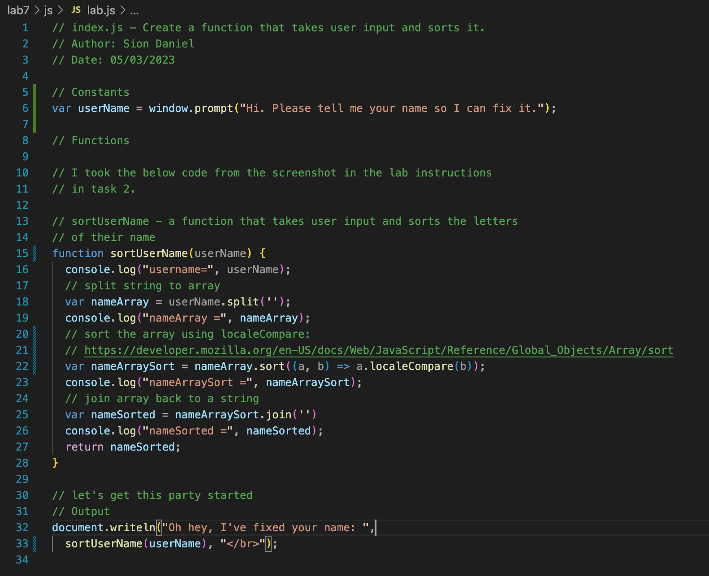

Lab 7 - Functions
Challenge
Working with a partner, write a function that takes user input.
Problems
I did not run into any problems during this lab. Having done a lot of programming before, JavaScript functions are very similar to other languages I have used.
Reflection
Write down summary of efforts here: During this lab I learned how to use the sort() function in JavaScript. It is very similar to that of other languages. I found it interesting that it cannot sort strings on their own. I also learned how to use the localeCompare() function to modify the default sort().
Results
